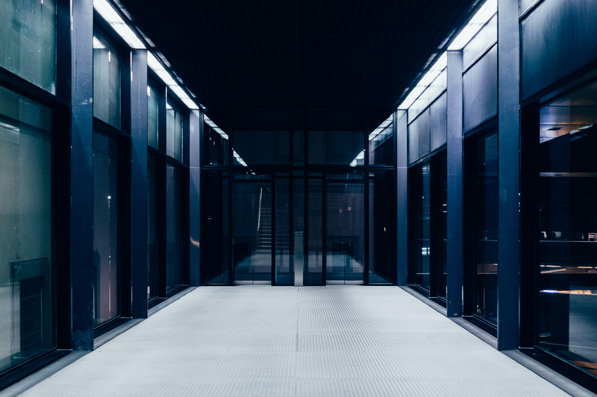

Apa itu
Komputer ?
Ada banyak jenis komputer untuk saat ini karena adanya inovasi terus menerus. Buat kalian yang ingin membeli komputer, anda harus tahu jenis jenis dari komputer. Komputer adalah sebuah alat elektronik yang komplek, karena memiliki beberapa komponen yang saling berkaitan satu sama lain di sebuah komputer. Berikut adalah jenis jenis komputer yang perlu diketahui saat ini:
-
PC (Personal Computer)
Personal Computer adalah Komputer yang anda gunakan secara pribadi yang biasa digunakan sehari-hari. Komputer jenis ini biasanya ada di Rumah, Kantor, Toko dll. Fungsi dari Komputer ini sendiri biasanya digunakan untuk kegunaan ringan seperti pengolahan data.
-
Komputer Server
Komputer Server adalah Komputer yang biasanya digunakan oleh Perusahaan untuk menyimpan data penting perusahaan atau klien. Komputer jenis ini dirancang agar bisa memberikan layanan dengan menggunakan jaringan internet. Funsi utama komputer ini adalah mengatur jalannya hak akses di sebuah jaringan.
-
Komputer Dekstop
Komputer dekstop adalah jenis komputer yang dirancang khusus untuk kebutuhan rumah atau kantor aja. Orang yang menggunakan komputer ini biasanya digunakan untuk kebutuhan pengolah data dirumah atau di kantor.
-
Laptop

Laptop merupakan jenis evolusi dari komputer mulai dari keyboard, mouse dan monitor ukurannya menjadi lebih kecil. Menariknya laptop menampung semua itu dalam satu perangkat saja sehingga orang bisa menggunakan laptop dimana dan kapan saja.
-
Komputer Hybrid
Mungkin beberapa orang masing asing dengan komputer hybrid. Ini merupakan jenis komputer yang dibuat oleh penggunnya agar lebih kuantitatif dan kualitatif. Komputer ini biasanya digunakan untuk menggerakkan sebuah mesin atau robot.
-
Super Computer
Supercomputer adalah komputer yang memiliki kapasitas dan ukuran yang sangat besar. Jenis komputer ini digunakan untuk pengolahan yang besar atau big data. Komputer ini memiliki perintah yang banyak, bahkan perintah tersebut dapat berjalan dalam hitungan detik saja.
-
Komputer Mainframe
Komputer Mainframe adalah komputer yang digunakan untuk memproses data atau aplikasi dengan kapasitas yang luar besar. Penggunaan komputer biasanya untuk pengelola-han data seperti riset penelitian, militer sampai dengan transaksi finansial.
Jenis - jenis Sistem Operasi
OS atau sistem operasi adalah perangkat lunak yang mampu untuk mengelola sumber daya software dan hardware agar dapat dijalankan dengan baik serta memudahkan interaksi antar pengguna atau user. Ada beberapa jenis sistem operasi komputer yang populer diantaranya :
-
Windows
Windows adalah salah satu sistem operasi yang populer dan banyak digunakan oleh orang. Mulai dari pertama kali diluncurkan yaitu versi 1.0 sampai saat ini yaitu versi 11.
-
MacOS
Mac OS adalah sistem operasi yang diciptakan oleh apple, inc. Mac OS merupakan sistem operasi pertama yang mendukung fitur GUI atau sistem Graphical User Interface.
-
Linux
Linux adalah sistem operasi yang bersifat Open source. Yang berarti Linux memiliki source code program yang bisa diubah dan dimodifikasi. Tidak sepopuler windows dan Mac, tidak banyak orang yang menggunakan sistem operasi ini.
Komponen Komputer
Komponen komputer adalah unit elektronik yang tergabung menjadi satu dalam sebuah komputer. Komponen Komputer terbagi menjadi dua yaitu perangkat utama dan perangkat tambahan.
-
Processor
Processor adalah salah komponen penting yang merupakan otak dari sebuah komputer tersebut. Dimana komponen ini bertugas untuk menjalankan segala proses pada komputer anda.
-
Motherboard
Motherboard adalah wadah atau penghubung bagi seluruh perangkat komputer. Bisa dikatakan motherboard adalah salah satu komponen yang penting dalam sebuah komputer.
-
RAM
RAM ( Random acces memory ) adalah komponen komputer yang berfungsi untuk menyimpan data yang bersifat sementara atau acak. RAM bekerja saat komputer sedang menyala, saat dimatikan instruksi dari RAM akan hilang.
-
Harddisk
Harddisk adalah sebuah komponen yang digunakan sebagai media penyimpanan. Hard disk memiliki ruang yang bertanggung jawab untuk menyimpan data secara permanen.
-
SSD
SSD adalah suatu komponen untuk menyimpan data dengan menggunakan seperangkat IC ( Integreted Circuits ). SSD berfungsi untuk menyimpan data secara permanen yang disimpan pada sebuah chip memori.
-
Heatsink
Heatsink atau biasa dikenal sebagai kipas pendingin adalah komponen yang digunakan untuk mendinginkan sebuah processor. Heatsink memberikan untuk memberikan suhu dingin kepada processor agar bekerja lebih optimal.
-
Power supply
Power supply adalah perangkat keras yang bertugas untuk menyuplai daya ke seluruh komponen komputer. Tujuan dari power supply adalah untuk mengubah arus bolak - balik menjadi arus searah.
-
Graphics card Graphics card atau VGA adalah komponen komputer yang digunakan untuk menerjemahkan dan memproses output ke dalam monitor. Penggunaan VGA ditujukan untuk hal - hal yang berhubungan dengan dengan desain atau 3D.
-
Monitor
Monitor adalah komponen komputer yang berguna untuk menampilkan grafis hasil output dari VGA. Monitor bisa membuat kita melihat apa yang ada di dalam komputer.
-
Mouse
Mouse adalah alat pointer untuk mengakses layar komputer. Dengan hadirnya mouse pengguna dapat menjelajah dengan lebih interaktif. Jika pengguna tidak memakai mouse maka akan lebih susah untuk menjelajah.
-
Keyboard
Keyboard adalah papan ketik yang berisi model huruf, angka, karakter, simbol dan tanda baca. Keyboard ini menjadi sarana untuk pengguna agar bisa memasukkan data ke dalam komputer.